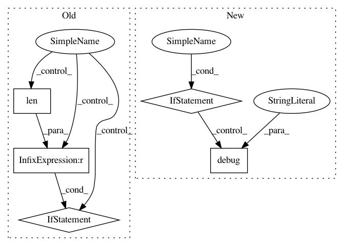

d1dfcc0b80c4ecead8866473e5cfdfd351ac7cbd,kur/backend/keras_backend.py,KerasBackend,process_loss,#KerasBackend#Any#Any#,530
Before Change
if isinstance(loss, Loss):
loss = [loss]
if len(loss) != len(model.outputs):
raise ValueError("Model has {} outputs, but only {} loss "
"functions were specified."
.format(len(model.outputs), len(loss)))
if isinstance(loss, (list, tuple)):
loss = dict(zip(model.outputs, loss))
if not isinstance(loss, (dict, OrderedDict)):
After Change
loss = [loss]
output_only = set(model.outputs) - set(loss)
if output_only:
logger.debug("These layers will be output-only layers, without "
"loss functions attached: %s", ", ".join(output_only))
if isinstance(loss, (list, tuple)):
loss = {x.get("target") : x for x in loss}
if not isinstance(loss, (dict, OrderedDict)):
In pattern: SUPERPATTERN
Frequency: 3
Non-data size: 5
Instances
Project Name: deepgram/kur
Commit Name: d1dfcc0b80c4ecead8866473e5cfdfd351ac7cbd
Time: 2017-05-10
Author: ajsyp@syptech.net
File Name: kur/backend/keras_backend.py
Class Name: KerasBackend
Method Name: process_loss
Project Name: deepgram/kur
Commit Name: d1dfcc0b80c4ecead8866473e5cfdfd351ac7cbd
Time: 2017-05-10
Author: ajsyp@syptech.net
File Name: kur/backend/pytorch_backend.py
Class Name: PyTorchBackend
Method Name: process_loss
Project Name: ilastik/ilastik
Commit Name: d835c2656618fe0d227c7eb15eecb4847e8b6475
Time: 2012-07-02
Author: bergs@janelia.hhmi.org
File Name: lazyflow/operators/obsolete/classifierOperators.py
Class Name: OpPredictRandomForest
Method Name: execute